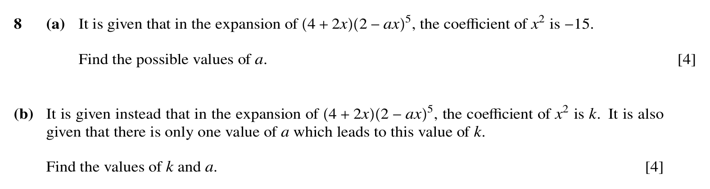
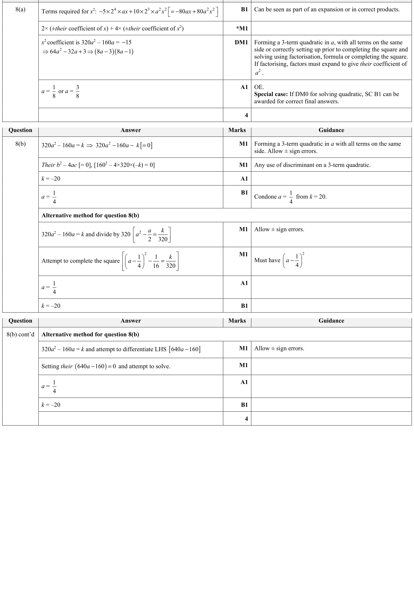

12autumn21_q08 / Q8
p1 12autumn21
paper_total_mismatch


- Validation
- fail
- Mapping
- pass
- Visual
- review
- Text only
- fail
- Question crop
- low
- Mark crop
- medium
- Q total
- 8
- MS total
- 8
- Paper total
- 74
- Question image
- p1/12autumn21/questions/q08.png
- Mark image
- p1/12autumn21/mark_scheme/q08.png
- Source PDF
- input/question_papers/9709 Mathematics November 2021 Question paper 12.pdf
Validation flags
paper_total_mismatch
Visual flags
ocr_text_sparse_or_merged
Review flags
crop_uncertainexcluded_boilerplate_copyright_footerlow_classification_confidencelow_confidence_question_cropmarkscheme_image_stitchedmarkscheme_image_uncertainocr_merged_sparse_lower_regionpaper_total_mismatchpaper_total_rescan_triggeredpart_topic_uncertaintopic_uncertaintopic_uncertain_low_quality_textweak_question_text
8 (a) It is given that in the expansion of (4 + 2x)(2 -ax)^{5}, the coefficient of x^{2} is -15. Find the possible values of a. [4] (b) given that there is only one value ofIt is given instead that in the expansion of a which leads to this value of (4 + 2x)(2 -ax)^{5}, the coefficient of k. x^{2} is k. It is also Find the values of k and a. [4]